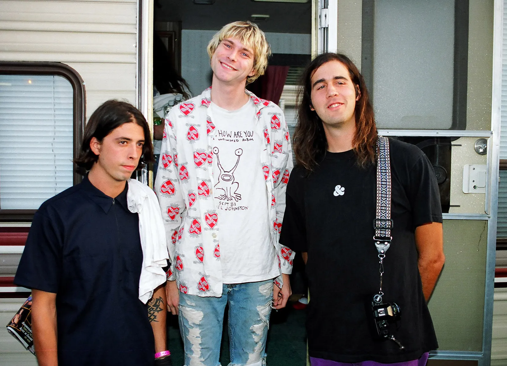
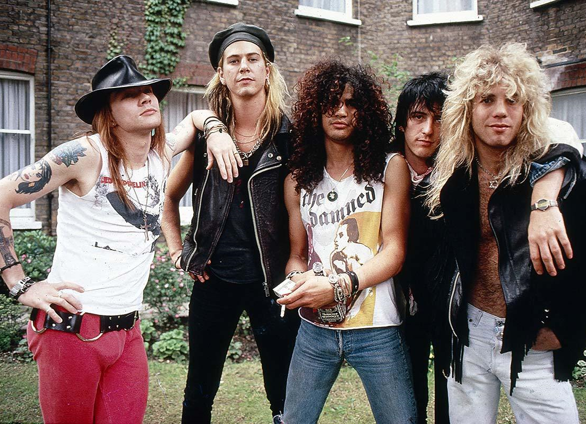
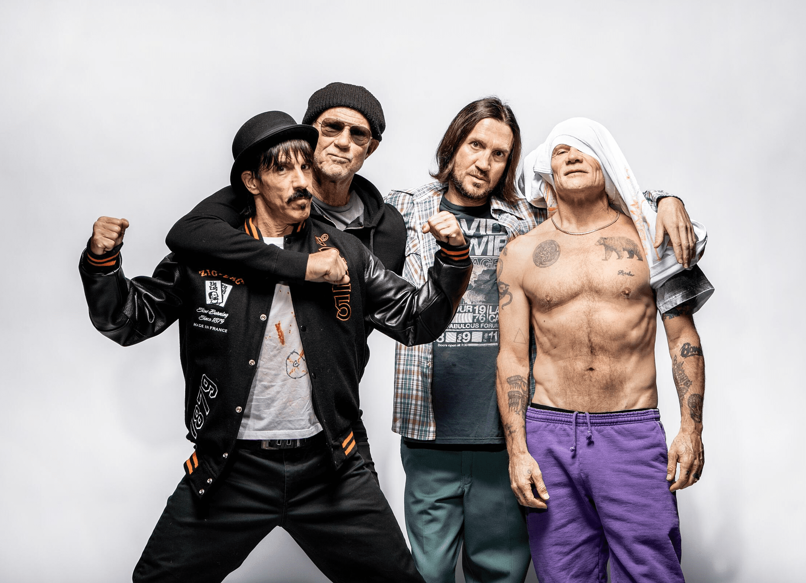
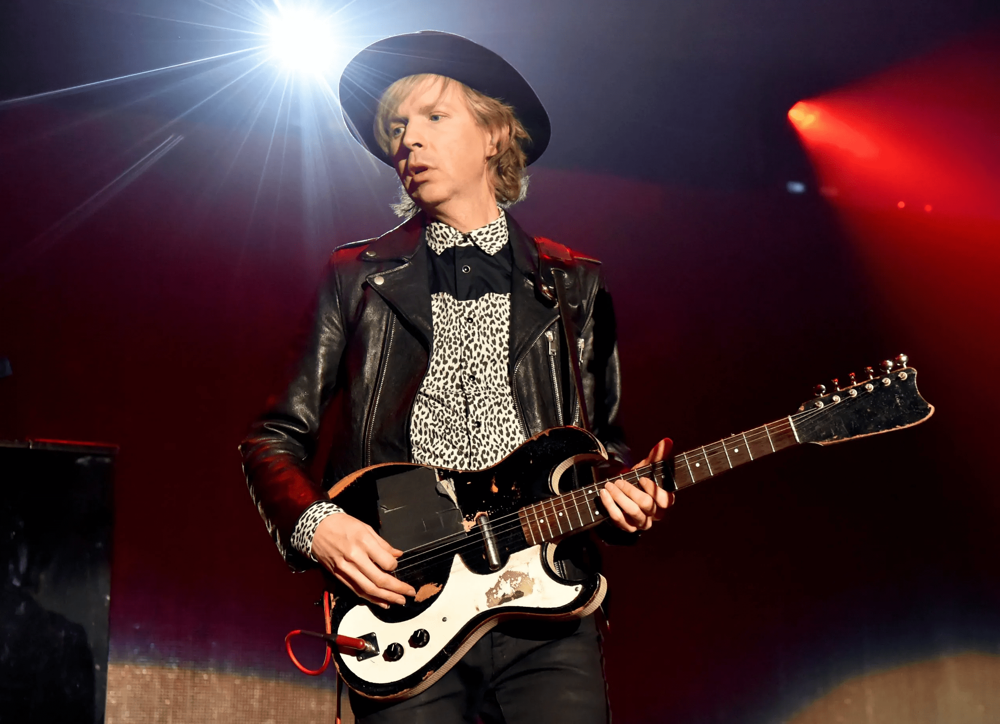
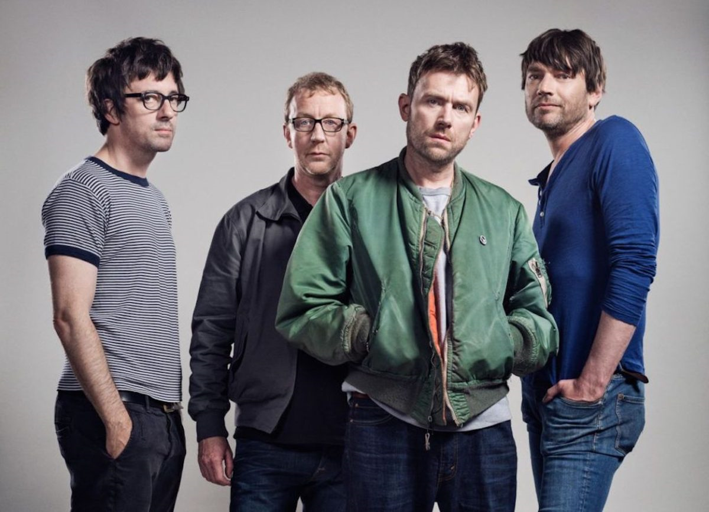
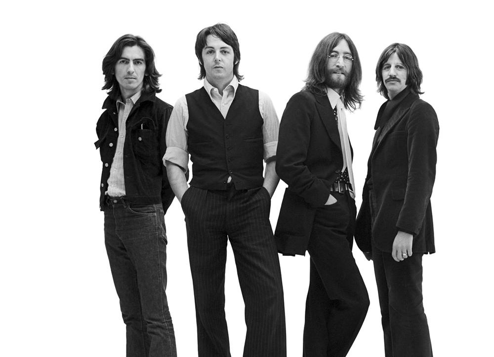
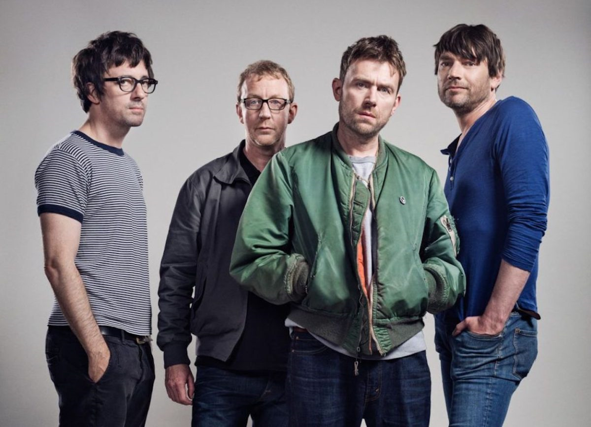
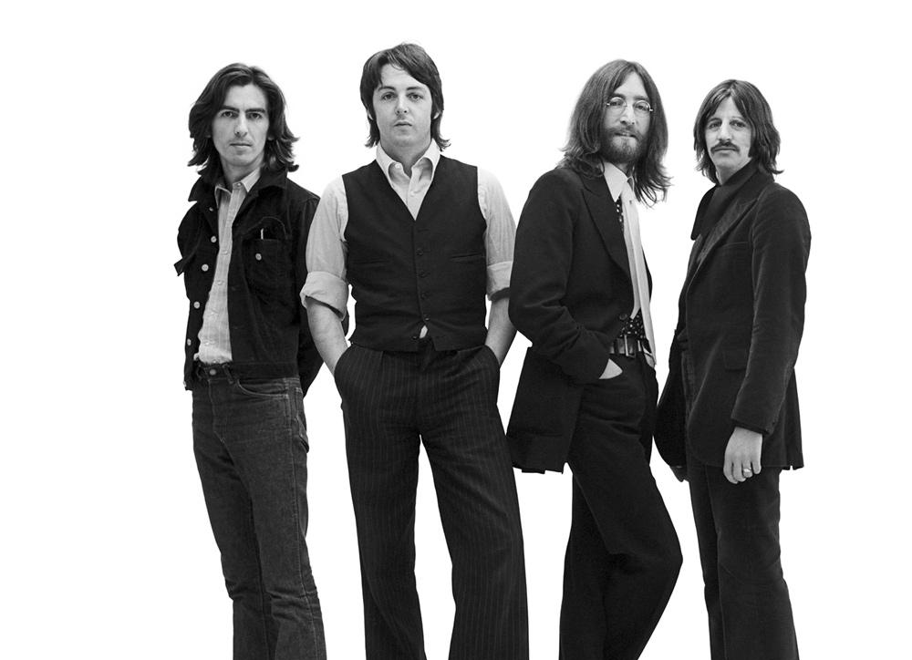
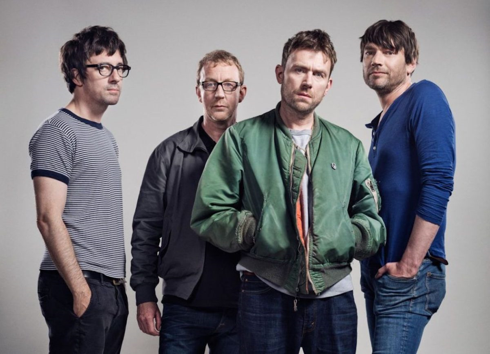
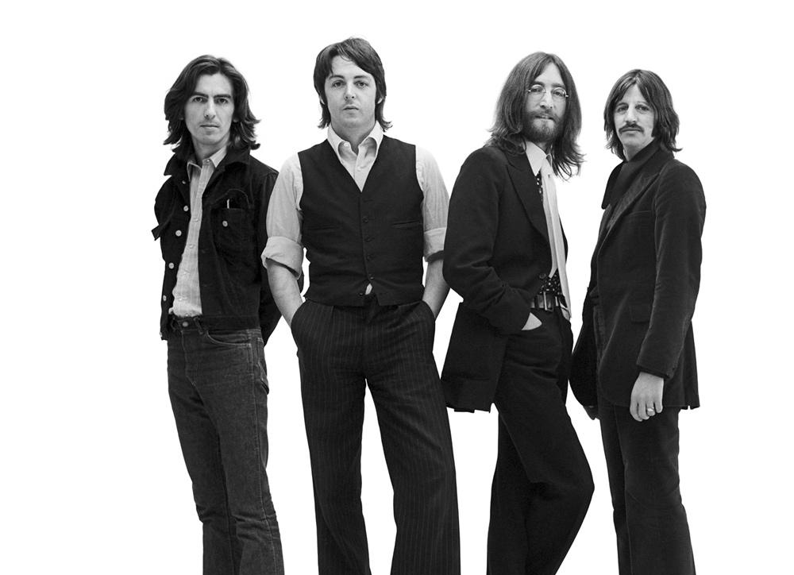

Actividad que, como afición o pasatiempo favorito,
se practica habitualmente en ratos de ocio.
Deportes
Me gusta jugar fútbol, tenis, ping-pong, frontón y montar bicicleta. Pero actualmente practico fútbol, tenis y bicicleta ya que son los deportes que más me gusta realizar. También disfruto de ver las competencias, solo que veo fútbol, tenis y carrera de autos. En fútbol, sigo la Premier League (fútbol inglés de clubes), las copas europeas de fútbol, el mundial de fútbol y los partidos de la selección de Perú; en tenis, trato de ver todos los torneos posibles (hay torneos entre enero y noviembre de manera consecutiva), pero principalmente los 4 majors; y en carrera de autos, principalmente Formula 1, Dakar Rally y las 500 millas de Indianápolis.




 





Música
Escucho bastante música cuando hago diversas actividades como hacer una tarea académica, ordenar, caminar, viajar, etc. El género que más escucho es alternative rock, pero también me gusta indie rock, film score, acid jazz y classical. Los músicos que escucho más son Weezer, Nirvana, Guns N' Roses, Red Hot Chili Peppers, Beck, The Vines, Blur y The Beatles. Sin embargo, si hablamos a nivel de música clásica, me gustan las obras de Edvard Grieg, Ludwig van Beethoven, Georges Bizet y Wolfgang Amadeus Mozart. A nivel de film score o soundtrack, la elección va de la mano con el gusto hacia la película, serie o videojuego. En ese contexto están las bandas sonoras de The Dark Knight, James Bond, Her, Grease, Cowboy Bebop y Minecraft.
Cine y televisión
Considero el género drama y thriller como los más vistos por mí tanto para cine como televisión porque contienen un ingrediente importante que es la intriga, sobre todo si está bien justificado en el guion. Dicho esto, las películas que puedo ver varias veces y no me aburro, por lo tanto las he visto, y las que califican como la descripción inicial, estimo que son mis favoritas. La lista inicia con la saga The Dark Knight, la saga James Bond, la saga Millenium Series (Stieg Larsson), Mulholland Drive, Non-Stop, Se7en y Zodiac. En cuanto a realizadores, los trabajos más admirables son de Christopher Nolan, David Lynch, David Fincher, Hans Zimmer, Hoyte van Hoytema, Christian Bale, Joaquin Phoenix y Heath Ledger. En cuanto a series, disfruto ver True Detective, Bron-Broen, Breaking Bad, Ray Donovan, Gossip Girl, The O.C. y Cowboy Bebop, pero comedias también como The Big Bang Theory, The IT Crowd, Peep Show y Kenan & Kel
Dibujo
Realizo diversos esbozos de paisajes porque me gusta la naturaleza tanto las figuras orgánicas como la iluminación, considero que diagramar las sombras puede ser complicado si lo ves desde un punto teórico. También me animo por ilustrar personas para practicar las proporciones de cada parte del cuerpo, sobre todo facciones del rostro y de la mano. Casi siempre utilizo cartulina de gramaje 180 y colores regulares, muy pocas veces he utilizado acuarelables u óleo pastel para pintar. No soy muy fanático de estos materiales por ahora. Esto es con respecto al dibujo desde un punto de vista recreativo ya que en mi carrera se requiere bastante de dibujo a mano al iniciar o para realizar apuntes rápidos de un mueble o espacio. Igual me divierte hacer planos a mano porque practicas muchos conceptos como la caligrafía, el pulso o la presión que uno aplica al lápiz o estilógrafo.
Literatura
Actualmente estoy leyendo el libro Crimen y Castigo de Fyodor Dostoevsky porque considero que es una obra importante en la literatura universal y porque la temática de la historia me llama la atención bastante ya que trata de la lucha constante de Rodion Raskólnikov, personaje principal, frente a diversas situaciones que se le anteponen. Los géneros que más me llaman la atención son el narrativo y dramático. También he desarrollado un gusto por la escritura ya que siento que me puedo expresar de mejor manera debido a mi personalidad introvertida. He escrito varios textos cortos que va desde novelas hasta cuento de niños, pero recientemente he estado escribiendo una novela, un cuento para niños y un libro informativo ya que a veces las ideas no fluyen de manera seguida, así que tengo que cambiar de tema para no parar de escribir.